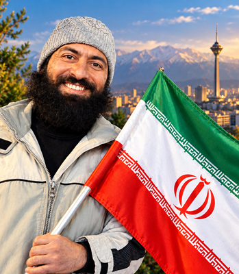

🇮🇷 تمامیت ارضی ایران
📊 حکمرانی دادهبنیان
🤝 همیاری اجتماعی
شورای شهر شفاف، دادهبنیان
و صدای مردم مطالبهگر
ترافیک، آلودگی هوا، مسکن، پسماند و فاصله میان مسئولان و شهروندان، با تصمیمهای جناحی و سلیقهای حل نمیشود. آمدهام تا شورای شهر تهران را به نهادی دادهبنیان، شفاف و مردمیار تبدیل کنم: انتشار باز دادههای شهری، داشبورد شفافیت قراردادها، هوش مصنوعی برای ترافیک و هوای پاک، بودجه مشارکتی محلهها، و ایستادگی پای انسجام ملی و تمامیت ارضی ایران.
